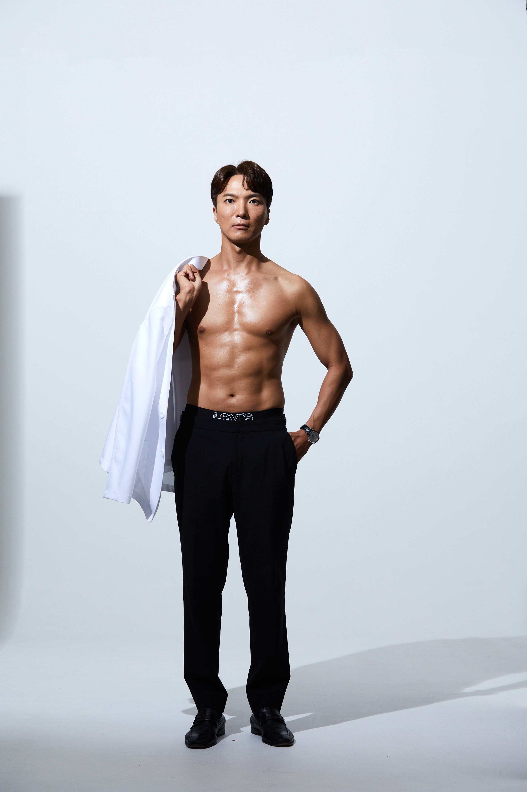
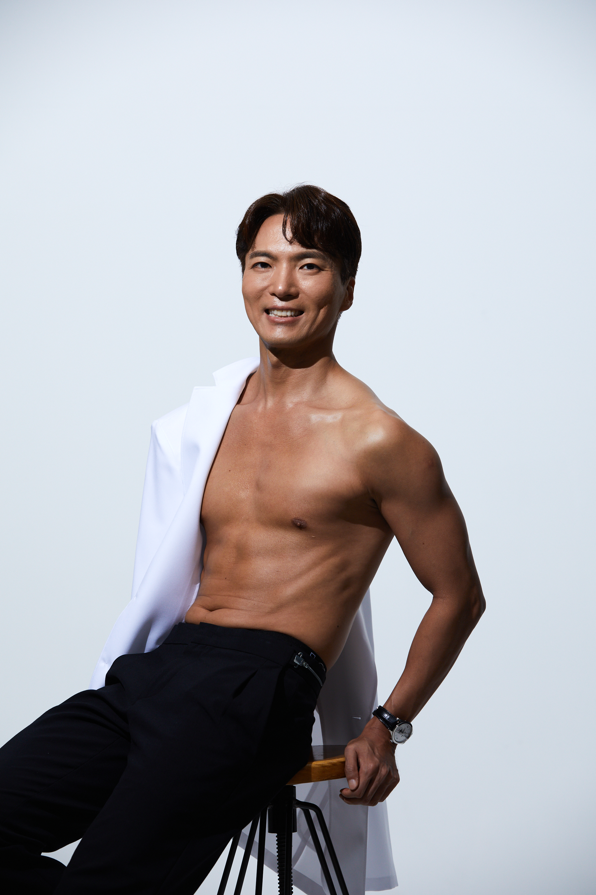

경청
고민과 기대를 충분히 듣습니다.

MEDICAL DIRECTOR
환자 한 사람의 고유한 라인에 집중하며,
신중한 진료의 기준을 이어갑니다.
연세대학교 신촌세브란스 전문의
前 365MC 수술센터 원장
前 쥬얼리성형외과 원장
前 톡스앤필 명동 원장
대한 지방흡입학회 학술이사 역임
대한 비만치료학회 정회원
대한 비만학회 정회원
대한 비만체형학회 정회원
PHILOSOPHY

아름다운 변화의 시작에는,
환자를 향한 깊은 이해와 진심,
그리고 신뢰를 소중히 여기는 마음이 있습니다.
PERSONALIZED CARE
한 사람을 위한 진료
사람마다 체형과 고민, 원하는 변화의 방향은 다릅니다. 충분히 듣고 세심하게 살피는 과정에서 한 사람에게 맞는 계획을 함께 찾아갑니다.
눈에 보이는 라인만이 아니라 환자의 마음까지 헤아리는 것. 슬림영이 중요하게 생각하는 진료의 시작입니다.
고민과 기대를 충분히 듣습니다.
개인의 체형과 방향을 세심히 살핍니다.
상담을 바탕으로 진료 계획을 세웁니다.